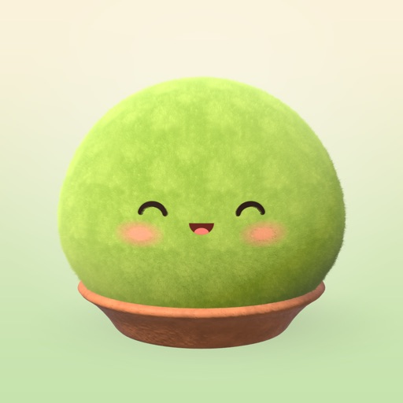
ふわふわの苔玉を、縁側で1体ずつ育てる放置ゲーム。ちょっとした時間に開いて、なでて、霧吹きをして、育ち具合を見る。毎朝の占いも届きます。
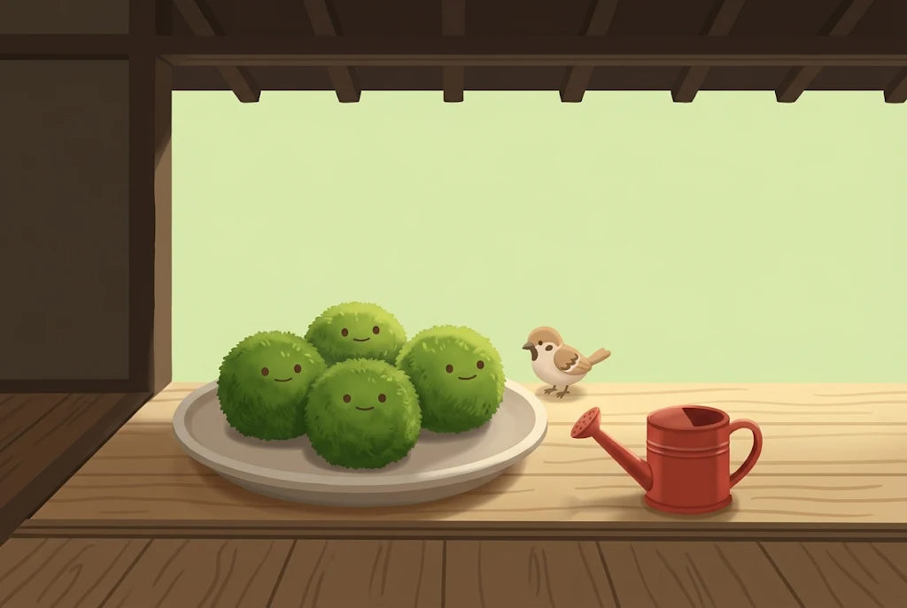
毎日ログインしないと損をする。イベントの期限に追われる。そんな遊び方に、少し疲れていませんか。
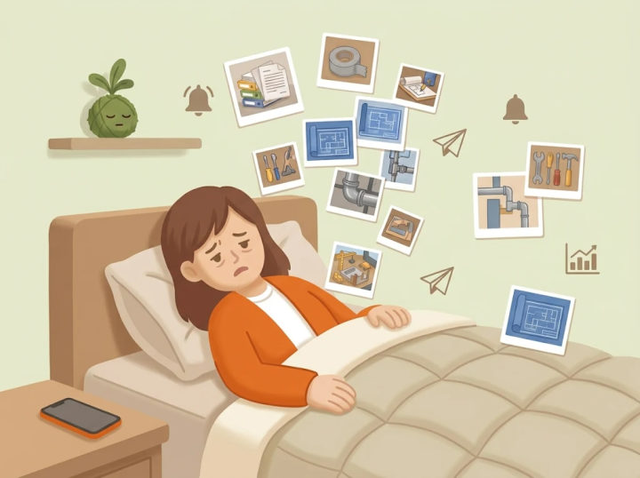
ログインしないと損をするゲームが、いつのまにか用事になっている。
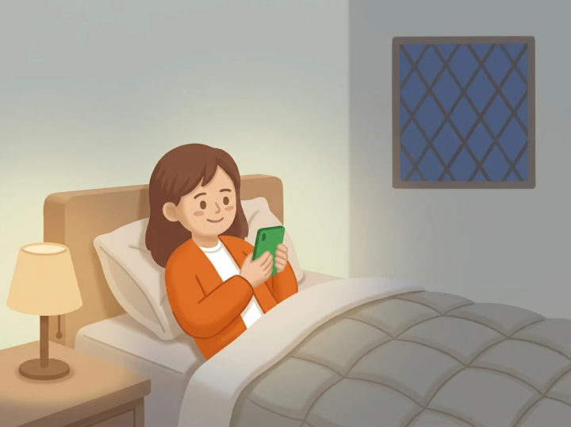
寝る前や休憩中に、ほんの少しだけ癒やされたい。
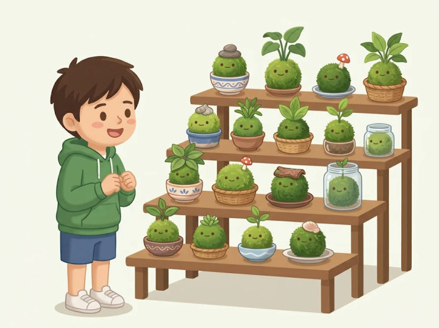
かわいいものを育てて、集めて、写真に残すのが好き。
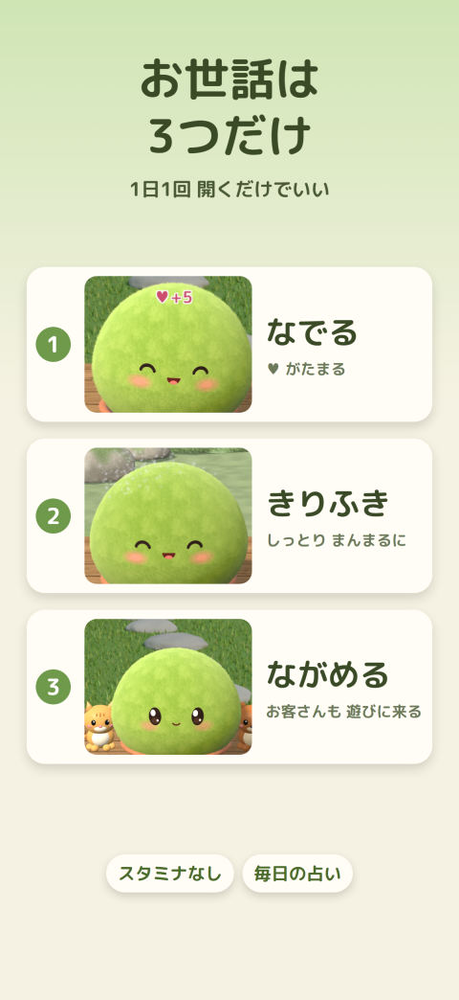
つつくとびっくりして、なでるとうっとり。霧吹きをすると気持ちよさそうな顔になり、夜はすやすや眠ります。
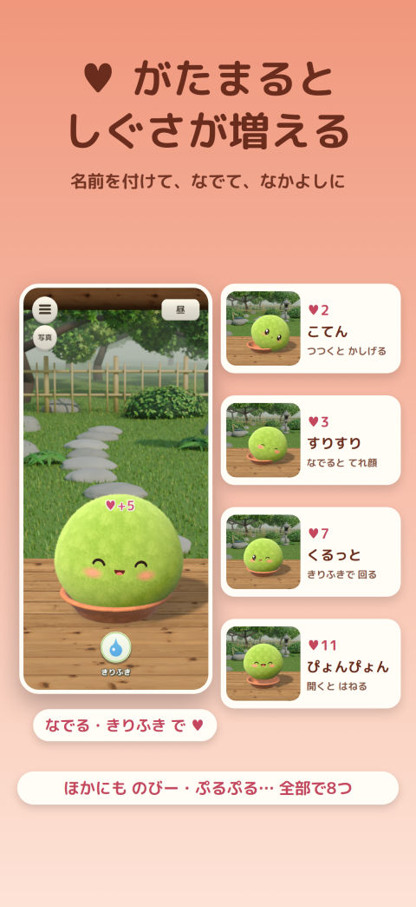
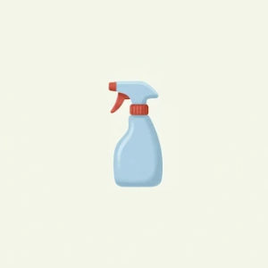
出している苔玉をなでたり、霧吹きをしたりするとハートがたまります。ハートは減りません。
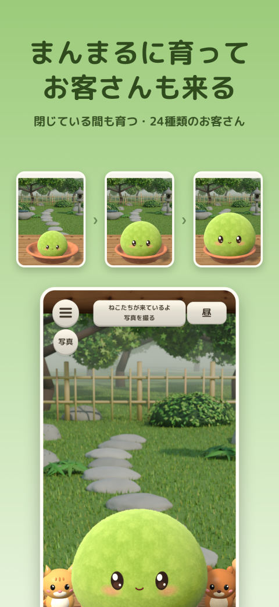
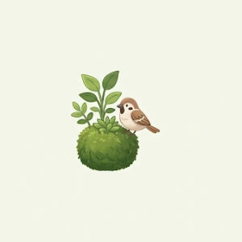
軒下・家の中・足元に小物を置くと、小鳥や動物たち（24種類）が遊びに来ます。
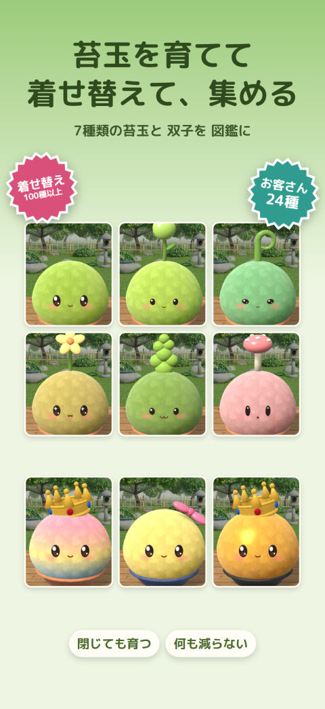
種類ごとに顔つきと頭の芽が違います。完成まで育てると、その種類の双子を作れるようになります。
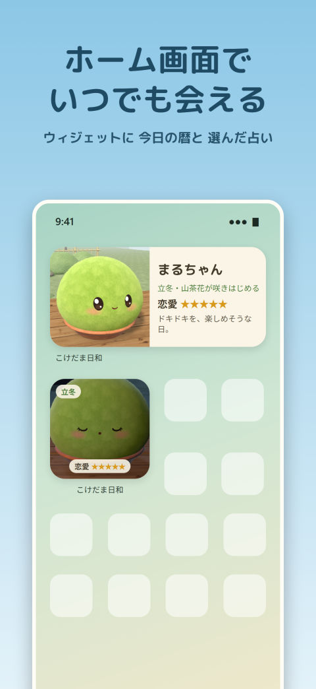
朝のテレビの占いを見るくらいの気軽さで。誕生日と血液型を入れておくと、毎日の占いが届きます。
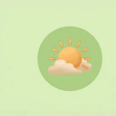
選んだ運勢の星の数とひとことが、毎朝お知らせとウィジェットに。朝のテレビの占いのように、気軽にどうぞ。
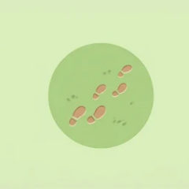
1,000歩で1ポイント、1日10ポイントまで。使うかどうかは選べます。
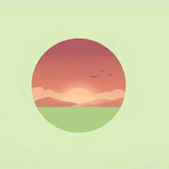
朝・昼・夕方・夜で、縁側の空の色と光が変わります。
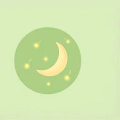
夜には蛍が飛びます。苔玉はすやすや眠ります。
その時の苔玉の姿を撮って残せます（ボタンなどは写りません）。
自分の部屋や窓辺をカメラで撮って、苔玉の背景にできます。
都道府県を選ぶと、雨や雪の日には縁側にも雨や雪が降ります（位置情報は使いません）。
行事の日や旬の食べ物の「季節のたより」が、ときどき届きます。
ウィジェットに、二十四節気と七十二候の「暦のひとこと」も出ます。
育てた子は図鑑に残り、いつでも縁側に出せます。
お試しが終わっても、自動でお金がかかることはありません。
育てた苔玉・図鑑・小物・写真はそのまま残ります
続けてすべての機能を使えます
・占いは、西洋占星術（あなたの星座と、その日に月がいる星座との関係）をもとに、数秘術・血液型・日本の暦を組み合わせて出しています。楽しむためのもので、結果を保証するものではありません。
スタミナも、時限イベントも、ランキングも、広告もありません。
記録と写真は、すべて端末の中だけに保存されます。アカウント登録もログインもありません。
何日か開かなくても、何も減りません。
苔の育て方を学ぶアプリではありません。登場する苔玉や生きものは、実在の苔や生きものから名前を借りた架空のものです。
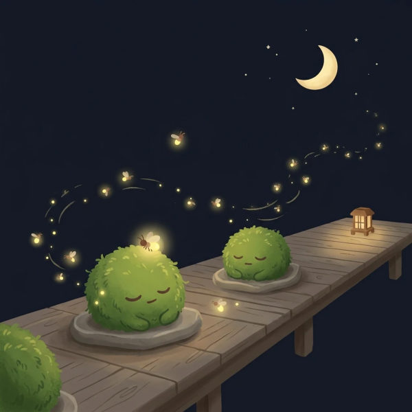